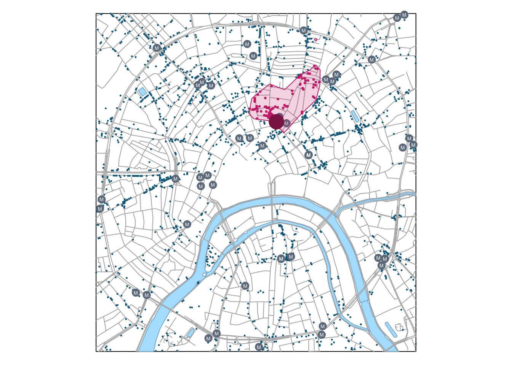

В данной лекции рассматриваются задачи анализа географических сетей. Они охватывают как исследование структурно-топологических свойств сетей (таких как центральность), так и решение практических задач, связанных с маршрутизацией, построением зон доступностей и т.д.
16.1 Кратчайший путь и зоны доступности
16.1.1 Загрузка данных
library(sf)library(tidyverse)library(classInt)library(osrm) # Использование онлайн-сервиса маршрутизации OSRMlibrary(sfnetworks)library(tidygraph)# Чтение данныхdb ='data/moscow.gpkg'roads =read_sf(db, "roads") # Дорогиpoi =read_sf(db, "poi") # Точки интересаrayons =read_sf(db, "districts") # Границы районовstations =read_sf(db, "metro_stations") # Станции метроwater =read_sf(db, "water") # Водные объекты# Прочитаем текущие параметры компоновкиdef =par(no.readonly =TRUE)# Уберем поля, чтобы карта занимала весь экранpar(mar =c(0,0,0,0))# Получим ограничивающий прямоугольник слоя дорог в качестве общего охвата картыframe = roads |>st_bbox() |>st_as_sfc() |>st_geometry()poi.food = poi |>select(NAME, AMENITY) |>filter(AMENITY %in%c("restaurant", "bar", "cafe", "pub", "fast_food"))## ОБЗОР ИСХОДНЫХ ДАННЫХ -------------------------------------# Визуализируем входные данныеplot(frame)plot(water |>st_geometry(), col ="lightskyblue1",border ="lightskyblue3",add =TRUE)plot(roads |>st_geometry(),col ="gray70", add =TRUE)plot(poi |>st_geometry(), col ="deepskyblue4", pch =20, cex =0.2, add =TRUE)
Зоны транспортной доступности представляют из себя зоны окружения объектов, построенные не по евклидову расстоянию, а по расстоянию или времени движения по дорожной сети. В задачах логистики и геомаркетинга зоны транспортной доступности часто называют зонами обслуживания (service area), поскольку используются для определения территории, которую может покрыть объект, предоставляющий некоторые услуги. Например, для пожарного депо зона 10-минутной доступности показывает территорию города, в любую точку которой пожарная машина может доехать из данного депо в течение 10 минут. И наоборот, для торгового центра зона 10-минутной доступности показывает территорию города, из любой точки которой можно добраться до ТЦ в течение 10 минут. Очевидно, что продолжительность прямого и обратного маршрута неодинакова, на нее может оказывать влияние схема движения, приоритет дорог и так далее.
Задача, которую мы решим в данном разделе, звучит так: определить все заведения питания, находящиеся в 7 минутах езды от Центрального детского магазина. Для построения зоны доступности мы будем использовать пакет osrm, предоставляющий интерфейс R к онлайн-библиотеке маршрутизации OSRM, работающей на основе данных OSM. Для построения зоны доступности (изохроны) нам понадобится функция osrmIsochrone() из данного пакета.
Внимание: для выполнения этого раздела модуля необходимо подключение к Интернету
Поскольку данные, используемые в настоящем модуле, предварительно были конвертированы в проекцию UTM и хранятся в метрах, а OSRM решает все задачи в географических координатах (широте и долготе относительно эллипсоида WGS84), нам необходимо научиться работать с проекциями данных и преобразовывать системы координат между собой.
## АНАЛИЗ ЗОН ТРАНСПОРТНОЙ ДОСТУПНОСТИ -------------------------------------# Инициализируем систему координат WGS84, используемую в OSRMWGS84 =st_crs(4326)# Извлечем информацию о системе координат исходных точекUTM =st_crs(poi)# Выберем целевой объектpsel = poi |>filter(NAME =="Центральный детский магазин"& SHOP =="toys")# Преобразуем координаты точки в WGS84psel.wgs =st_transform(psel, WGS84)# Получаем 5-минутную зону транспортной доступности# с помощью пакета osrmservice_area =osrmIsochrone(psel.wgs, breaks =3)# Преобразуем зону обратно в UTM для дальнейших операцийservice_area_utm =st_transform(st_as_sf(service_area), UTM)# Отбираем точкиselected_poi = poi.food[service_area_utm, ]# Визуализируем результатplotBasemap()plot(service_area_utm |>st_geometry(),col =adjustcolor("violetred3", alpha.f =0.2),border ="violetred3",add =TRUE)plot(selected_poi |>st_geometry(), col ="violetred3", pch =20, cex =0.5, add =TRUE)plot(psel |>st_geometry(), col ="violetred4", pch =20, cex =4, add =TRUE)

Итак, в данном разделе мы научились строить зоны транспортной доступности в виде полигонов, ограниченных изохроной времени движения.
16.1.2.2 Построение маршрутов и матриц времени движения
В этом разделе модуля пространственного анализа мы посмотрим, каким образом можно построить оптимальный маршрут между двумя точками, а также получить матрицу времени движения между точками (на примере станций метро). Для решения этих задач используем следующие функции пакета osrm:
osrmRoute(src, dest) — строит оптимальный маршрут между точками src и dest
osrmTable(loc) — строит матрицу времени движения между всеми парами точек в loc
Так же, как и в предыдущем разделе, нам понадобятся преобразования координат. Построим оптимальный маршрут между книжным магазином “Молодая Гвардия” на Полянке и чебуречной “Дружба” на метро Сухаревская:
## ПОСТРОЕНИЕ МАРШРУТОВ -------------------------------------# Выбираем и проецируем начальную точкуorigin = poi |>filter(NAME =='Молодая Гвардия')origin_wgs =st_transform(origin, WGS84)# Выбираем и проецируем конечную точкуdestination = poi |>filter(NAME =='Чебуречная "Дружба"')destination_wgs =st_transform(destination, WGS84)# Строим маршрутroute =osrmRoute(origin_wgs, destination_wgs, overview ="full", # запретить генерализацию линийreturnclass ='sf') # вернуть результат в виде объекта класса Spatial# Преобразуем результат обратно в UTMroute.utm =st_transform(route, UTM)# Визуализируем результат:plotBasemap()plot(route.utm |>st_geometry(),lwd =3,col ="orange",add =TRUE)plot(origin |>st_geometry(), col ="tomato3", pch =20, cex =3, add =TRUE)text(origin |>st_coordinates(),labels ="O",col ="tomato4",cex =0.5)plot(destination |>st_geometry(), col ="tomato", pch =20, cex =4, add =TRUE)text(destination |>st_coordinates(),labels ="D",col ="tomato4",cex =0.7)
16.2 Структурный анализ
16.2.0.1 Подготовка данных
Пакет sfnetworks использует методы пакетов tidygraph и igraph для анализа сетевых данных. Если OSRM содержит только базовые функции сетевого анализа, то sfnetworks позволяет выполнять достаточно сложные теоретические расчеты на географических сетях. Рассмотрим их на примере имеющегося у нас датасета по центру Москвы.
Чтобы граф построился корректно, необходимо продублировать линии, не являющиеся односторонними, а также округлить координаты. Первая операция нужна для того чтобы разрешить проеезд по двусторонним ребрам в обе стороны. Вторая операция важна для того чтобы устранить ошибки пристыковки линий, из-за которых они могут быть не распознаны как топологически связанные.
В частности, для выполнения анализа необходимо вычислить веса всех ребер графа. Обычно вес зависит от времени передвижения, но за неимением такой информации можно использовать и длину:
net = net |>activate("edges") |>mutate(weight =edge_length())
16.2.0.2 Вычисление центральности
net = net |>activate("edges") |>mutate(bc =centrality_edge_betweenness())ggplot() +geom_sf(data =st_as_sf(net, "edges"), aes(col = bc, linewidth = bc)) +scale_color_viridis_c() +ggtitle("Центральность по промежуточности")
16.3 Краткий обзор
Для просмотра презентации щелкните на ней один раз левой кнопкой мыши и листайте, используя кнопки на клавиатуре:
Презентацию можно открыть в отдельном окне или вкладке браузере. Для этого щелкните по ней правой кнопкой мыши и выберите соответствующую команду.
16.4 Контрольные вопросы и упражнения
16.4.1 Вопросы
16.4.2 Упражнения
Используя данные из набора moscow.gpkg для текущего задания, повторите проведенный сетевой анализ на примере других точек.
Самсонов Т.Е.Визуализация и анализ географических данных на языке R. М.: Географический факультет МГУ, 2024. DOI: 10.5281/zenodo.901911